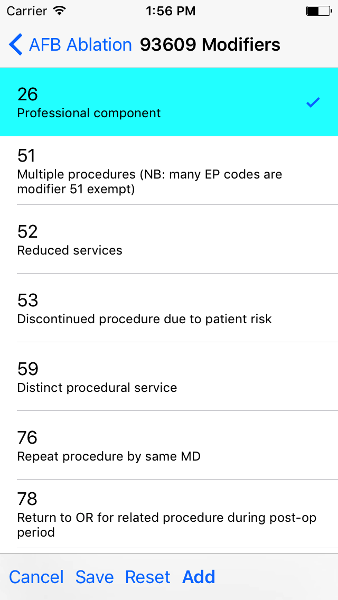
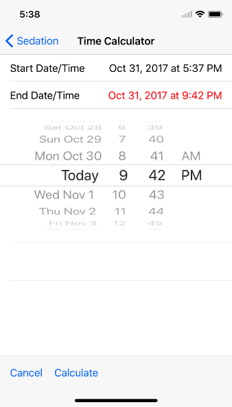

Table of Contents
EP Coding Help
Why EP Coding?
CPT® coding is not for the faint of heart, and of all proceduralists electrophysiologists have the most complicated coding to deal with. CPT coding is arcane. Unlike other medical coding systems, it is a proprietary system, copyrighted and owned by the American Medical Association. It is a secretive system, unless you are willing to shell out large quantities of money to buy the official AMA CPT coding book or attend a CPT coding seminar. Alas, this is a cottage industry for the AMA and those who run coding seminars, for the AMA sees fit to slightly tweak the codes each year, rendering the previous year's coding book obsolete. Sweet deal for them, but bad for physicians struggling to utilize this awkward, overengineered system correctly. (In a sense EP Coding is also one of these cottage industries. Thanks, AMA! However EP Coding only costs 99¢ and future upgrades are free). There is a strong temptation to throw up one's hands in despair and just let the professional coders code procedures based on whatever is documented in the procedure report. However, this is like asking an accountant to do your taxes based on rough guesses of how much money you earned and spent over the year. The bottom line is, the more you understand CPT coding of procedures, the more accurate your coding will be, and the better your documentation will be in support of the codes used.
Who should use EP Coding?
Physicians who perform cardiac electrophysiology (EP) procedures and are required to submit CPT® codes for these procedures. EP Coding is intended to help EP physicians enter the correct codes in an EHR (Electronic Health Record). It is not intended for professional coders nor is it a substitute for the AMA official CPT® documentation.
How does EP Coding help?
- Lists relevant, up-to-date CPT® codes for EP procedures, with succinct descriptions.
- Makes clear which codes can and cannot be combined for specific procedures.
- Analyzes selected codes for errors and warnings.
- Provides help on how to code procedures.
How to use EP Coding
Select a procedure
image
On an iPhone, the initial screen when the app starts shows a list of common EP procedures. On an iPad, the list of procedures appears at the side of the screen, and it may be necessary to tap the Procedures button at the top left to show the list.
image
The procedure list covers most common EP procedures. If the procedure is not listed, you have several options. You can use the Wizard (link) to code complicated device procedures. You can Search (link) for specific codes. You can also use the All Codes option of the procedure list, which contains all EP-related codes in numeric order.
Procedure codes
- Types of codes
Each procedure has a list of codes
Figure of AFB codes
Codes are organized as primary codes, at least one of which needs to be selected, and additional or optional codes which are commonly used with the primary procedure codes. Selected codes are colored and have a check mark at their right edges. Codes that must be selected for a particular procedure are green and already selected. These green colored codes cannot be unselected. Codes that cannot be selected are crosshatched in gray. Codes you select are yellow.
- Selecting codes
Select a code by tapping it. Unselect the code by tapping it again. Hitting the back button and going back to the main procedure list will unselect any selected codes (though selected codes can be saved – see link).
- Code modifiers
- Adding and changing modifiers
The CPT coding system includes hundreds of code modifiers that can or must be added to codes, depending on circumstances. It is beyond the scope of this help text to explain the intricacies of modifiers. EP Coding includes the most common modifiers used, and by default these modifiers are applied to codes when appropriate. Modifiers can be added or edited for each code, saved to become new defaults, or reset to the original program defaults.

Figure 1: Modifier screen
Long press on a code to bring up a list of common code modifiers that can be added or removed from each code.
- Adding and changing modifiers
- Sedation coding
As of 2017, the AMA, in their neverending quest to make life complicated for physicians, decided to unbundle sedation coding from procedures codes. Six new sedation codes were added, dependent on the age of the patient, and whether the physician performing the procedure was also performing (i.e. supervising) the administration of what is officially termed "moderate sedation." Codes were separated between codes for the initial 15 minutes of sedation, and subsequent 15 minute intervals. The latter codes can be applied multiple times, depending on the length of sedation time. To complicate matters further, there are rules for rounding time periods, so that, for example, the initial 15 minutes of sedation code can only be applied for time periods between 10 and 22 minutes. If you administer 9 minutes of sedation, it doesn't qualify for any sedation code. Also note that sedation time does not equal procedure time. It must be tracked and documented separately.
Give all this, EP Coding now has a sedation calculator

Figure 2: Sedation coding calculator
Tap Sedation at the bottom of the screen to add sedation codes. Note that the Sedation button is red if you have not entered any sedation information yet for a procedure. It turns blue like the other buttons after the sedation data is entered. When you tap the button a menu appears offering to Add or Edit the sedation codes, which then leads you to a screen similar to the one above appears. Enter the sedation time (not procedure time), rounded to the nearest minute. (I'm sure it's no surprise that time must be rounded down to the nearest minute. See this link.) Select whether the same MD (i.e. you) performed the procedure and administered sedation (administering doesn't mean you did it personally). If another MD, e.g. an anesthesiologist, administered the sedation, the calculator when determine the proper coding, but that other MD is the one who must submit the codes. The other factor that you must choose is the age of the patient: greater or less than 5 years old.
To assist with determining the sedation time, tap Calculate to the right of the sedation time text entry field. The next screen will appear.

Figure 3: Sedation time calculator
Use the date and time wheel to set the start of sedation time, and then select end time on the segmented control at the top of the screen. Set the end time on the wheel and then the Done button. The calculated time in minutes will be transferred to the Sedation time text entry field.
Tap Add Codes to add the codes to the procedure. A dialog box will appear summarizing the sedation coding. Tap No Sedation if you did not use sedation during the procedure. Tap Cancel or the back button if you don't want to add sedation coding at this time. When you return to the procedure detail screen, the sedation codes won't appear on the list of codes, but they will appear when you tap Summarize to get a Code Summary as described below. Sedation coding using the Device Wizard is handled a little differently than this, and is described further below.
- Saving codes
Tap Save to save your selection of additional codes as a default. If you nearly always select the same additional codes (e.g. always do 3D mapping with SVT ablation), save the codes and they will pre-selected when you use the app again. Note that primary code selections are not saved.
- Clear saved codes
Tap Clear to clear the selected codes.
- All EP codes module
The all EP codes module lists every EP procedure code in numerical order, with code number given first. It is the a la carte menu of EP Coding.
Code Summary
Tap Summarize to show a summary of the codes selected along with any comments, warnings or errors (highlighted in green, orange or red respectively.
Options menu
Tap the menu icon on the upper right of the screen for more options.
- Search codes
Tap Search to search for codes by name or number. Note that due to the abbreviations used, a search that you expect to have results may come up empty. For example to search for pacer/pacemaker codes, search for "PPM."
- Device wizard
Tap Device Wizard to steer you through complex device upgrades and revisions.
- Help
General hints
- Use the specific procedure modules rather than the all EP codes module for coding procedures.
- You may find it easier to use the Device Wizard to do device upgrade coding rather than use the Upgrade/Revise/Extract module.
- Use the all EP codes module if you need to look up a specific code, as they are listed in numeric order in this module.
- There are some rarely used codes in the all EP codes module that aren't present in the other modules.
- Don't try to add codes that are disabled in a procedure module.
- If you nearly always add codes to a procedure (e.g. 3D mapping with AFB ablation), then save it as a default using the Save icon.
- Warnings (orange) point out codes that you may be missing or code combinations that possibly shouldn't be used together.
- Errors (red) indicate code combinations that almost certainly are not allowed.
- Check with your coders or the AMA documentation if you are not sure how to code a procedure.
Specific procedures
AFB ablation
- Includes comprehensive EP testing, LA pacing and recording and transseptal puncture.
- Add 93657 if additional AFB ablation done beyond pulmonary vein isolation.
- Add 93655 if separate supraventricular arrhythmia mechanism ablated (e.g. focal atrial tachycardia).
SVT ablation
- Includes comprehensive EP testing.
- SVT ablation code is used for any kind of SVT ablation including WPW, focal atrial tachycardia, atrial flutter, and AV nodal reentry.
VT ablation
- Includes comprehensive EP testing, LV pacing and recording, and mapping codes.
- You can't add mapping codes 93609 or 93613 to VT ablation!
AV node ablation
- It is not clear if EP testing codes can be combined with AV node ablation.
- It is not clear if mapping codes can be combined with AV node ablation.
- These points may need to be clarified with your coders.
EP testing
- Use 93620 (EP testing with attempted arrhythmia induction).
- Don't code with ablation procedures (? exception AV node ablation).
- You can add mapping codes, but don't add ablation codes to EP testing.
New PPM or ICD
- Use 33206 to 33208 for new PPM depending on number of leads.
- Use 33249 for new single or dual ICD.
- Add code 33225 to dual chamber device code for PPM or ICD with CRT.
- Add 93641 if you do DFT testing during the ICD implant.
- Placing a sub-cutaneous array is probably best coded with 33999 (unlisted surgical procedure code).
- Modifer Q0 must be used for primary prevention ICDs (the majority of implants in most cases). Modifier Q0 must be removed for other ICD indications (i.e. secondary prevention).
Replace PPM or ICD
- Use 33227 to 33229 for PPM replacement and 33262 to 33264 for ICD replacement depending on number of leads.
- Do not add generator removal codes to these codes!
- Add 93641 if you do DFT testing during ICD generator replacement.
- Remember to use Modifier Q0 if needed.
SubQ ICD/Leadless PPM
- SubQ ICD has new codes in 2015.
- Leadless PPM codes are new and are emerging technology codes that are temporary and will probably be changed in the next revision of the codes.
Upgrade/revise/extract
- This is the most complicated coding area. We will break this down into some specific situations. You can also use the Device Wizard to lead you through this. This is the simplest way to do this!
- Note codes are arranged in logical groups, not necessarily in numeric order.
- Don't forget Modifier Q0!
- Lead addition only, no change in generator
- Use specific lead placement code, e.g. 33216, place A lead.
- Use 33224 to place an LV lead if the CRT generator is already there.
- Lead repositioning
- Reposition previously implanted single A or V lead: 33215
- Reposition previously implanted LV lead: 33226
- Removal of generator alone
- PPM generator removal: 33233
- ICD generator removal: 33241
- Don't use these codes in conjunction with generator-only replacement codes, but do use them with new/replacement system codes for upgrades (see Upgrade of system).
- Removal/extraction of leads
- PPM single lead extraction: 33234
- PPM dual lead extraction: 33235
- ICD 1 or 2 leads extracted: 33244
- LV lead extraction has no specific code, probably should use 33234 or 33999 (unlisted procedure).
- Removal of entire system without replacement
- Use combination of generator removal and lead removal codes as appropriate.
- New/replacement device
- PPM: 33206 to 33208
- ICD: 33249
- Plus LV lead: 33225
- Upgrade of system
- Single chamber to dual chamber PPM (includes new lead, removal of old generator and placement of new generator) : 33214
- Other situations: code removal of generator and removal of leads if leads are removed, then code for insertion of new system.
- Example: upgrade of single chamber PPM to ICD with CRT.
- Code PPM generator removal: 33233
- Code single or dual ICD system implant: 33249
- Code implant LV lead with new system: 33225
- Place generator, existing leads
- Single chamber PPM generator: 33212
- Dual chamber PPM generator: 33213
- Single chamber ICD generator: 33240
- Dual chamber ICD generator: 33230
- CRT ICD generator: 33231
- Pocket revision
- PPM pocket revision: 33222
- ICD pocket revision: 33223
- Lead repair
- One lead repaired: 33218
- Two leads repaired: 33220
Other procedures
- These are miscellaneous EP procedures.
- Fluoroscopy to check for lead integrity: 76000
All EP codes
- Lists all codes in the app in numeric order.
- Avoid using this module unless other ones don't cover coding because procedure is unusual or rarely done.
- Code analysis may not check every combination of codes selected in this module.
- This module can be useful to look up specific code numbers.
- Sedation codes are listed, but the sedation calculator is not available in this module.
Abbreviations
- A = atrial
- AFB = atrial fibrillation
- AFL = atrial flutter
- CRT = cardiac resynchronization therapy
- ICD = implantable cardioverter defibrillator
- PPM = permanent pacemaker
- LV = left ventricular
- SubQ = subcutaneous
- SVT = supraventricular tachycardia
- V = ventricular
- VT = ventricular tachycardia
Limitations
- EP procedure codes only.
- No surgical EP codes (e.g. LV lead via thoracotomy).
- Some rare or obsolete codes are not included.
- Code descriptions are paraphrased.
- Code components are not given or are incomplete.
- No office based or in-patient billing codes.
- No device programming codes.
- Only limited, common code modifiers are presented.
Acknowledgements
- CPT copyright 2012 American Medical Association. All rights reserved. CPT is a registered trademark of the American Medical Association.
- A limited number of CPT® codes are used in this app, under the fair use doctrine of the US Copyright Act. For a discussion of the rationale see here.
- The source code for EP Coding is available on GitHub.
- EP Coding is open source software and is licensed under the Apache License Version 2.0. No guarantees are made as to the accuracy of the app, so use at your own risk.
- For questions, error reporting or suggestions contact EP Studios.
- Website: https://www.epstudiossoftware.com